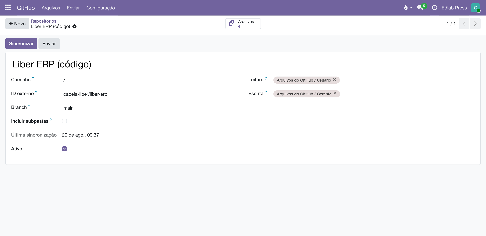

Arquivos no GitHub
O mesmo porteiro, na estante onde a produção versiona os originais: um repositório vira pasta, cada envio vira commit, cada revisão tem SHA — e o link compartilhado, pela primeira vez, não fura o portão.
Visão geral
Este app é um corpo do chassi Cloud Files — o mesmo do Dropbox e do Drive. A disciplina é herdada e idêntica: acesso por grupos pasta a pasta, multiempresa, espelho de metadados, tags e vínculos, mapear é de administrador, escrever exige grupo de escrita. O que muda é o vocabulário, traduzido do Git:
| No Liber | No GitHub |
|---|---|
| Pasta | Um repositório (ID externo = dono/repositório), com subpasta opcional no campo Caminho e Branch (vazio = a padrão). |
| Enviar | Um commit liber: arquivo.pdf na branch da pasta. Nunca sobrescreve: nome repetido vira arquivo (1).ext. |
| Revisão | O SHA do blob — versionamento de graça, mudou o conteúdo, mudou o SHA. |
| Link compartilhado | A página do arquivo no GitHub — só abre para quem enxerga o repositório. Por isso não expira: a ficha registra honestamente "sem validade". |

Configuração
- Na conta GitHub da empresa, gere um fine-grained personal access token com acesso aos repositórios que serão mapeados e permissão Contents: Read and write (roteiro no NOTES.md do módulo).
- Preencha e use Testar conexão. Uma conta por empresa.
- Como administrador, mapeie em : o ID externo como dono/repositório, a subpasta (Caminho, / para a raiz), a branch e os grupos.
O dia a dia
Sincronizar espelha a árvore da branch (a subpasta mapeada, recursiva ou não); baixar desce pelo Odoo com o portão conferido; enviar commita pelo menu . Tags e vínculos com contatos e produtos são os mesmos da casa — um contrato no Dropbox e seus originais no GitHub apontam para o mesmo autor e o mesmo título.

Limitações conhecidas
- Sem miniaturas — baixar cada imagem só para encolher não vale a banda num host de código.
- Sem data de modificação por arquivo no espelho (seria uma chamada de API por arquivo; o SHA já denuncia mudança).
- Arquivos em LFS aparecem com o tamanho do ponteiro, não do conteúdo.
- Arquivos no Dropbox — a explicação completa da mecânica compartilhada.
- Arquivos no Google Drive — o corpo do Drive, para a equipe das planilhas.